Pickaxe and Hand Axe 16 pop BO - By CraggHack
Archaic
/
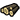
/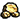
/4 / 0 / 0 / 0
Initial 4 vills to
4 / 0 / 1 / 0
1 to - Research
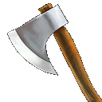
4 / 2 / 1 / 0
2 to
4 / 2 / 2 / 0
1 more to
8 / 2 / 2 / 0
From here rally all to . Research
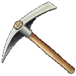
after the 5th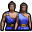
is trained8 / 2 / 2 / 0
Build
The other mine builds a
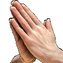
when you have 150 150 (Option: You can forcedrop when there is 2850 to start to build the ).The other mine builds a
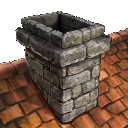
when you have 50Advance
7 / 4 / 3 / 1
Option one - army focus: Train
New villagers are ralled to until 7, then more to . Train Hercules as fast as you can. Aim for harrasment with your army and a good use of restoration.
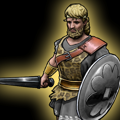
. On advance make a stable and barracks and start producing as fast as possible.New villagers are ralled to until 7, then more to . Train Hercules as fast as you can. Aim for harrasment with your army and a good use of restoration.
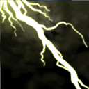
the enemy myth unit or hero.5 / 5 / 4 / 2
Option two - early Minotaur raiding: Get . On advance get Labyrinth of Minos (Minotaur upgrade).
Send the minotaur to your base and the upgrade should be in just before you are raiding his villagers.
New villagers are ralled to until 7. Train Hercules as fast as possible. Follow up with a barracks and stable.
Alternate new villagers to and .
Train minotaurs whenever you have enough . Follow it up with hoplites,
Send the minotaur to your base and the upgrade should be in just before you are raiding his villagers.
New villagers are ralled to until 7. Train Hercules as fast as possible. Follow up with a barracks and stable.
Alternate new villagers to and .
Train minotaurs whenever you have enough . Follow it up with hoplites,
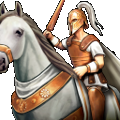
and heroes.3 / 6/ 6 / 0
Option three - 2nd TC: Get - Then shift Transition into 2nd tc.
Make the TC with all of the villagers.
While you are building the TC new villagers are rallied to
Also move 3 of the villagers to . You need to produce from two TCs.
Make the TC with all of the villagers.
While you are building the TC new villagers are rallied to
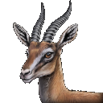
or other in base.Also move 3 of the villagers to . You need to produce from two TCs.
5+ / 3 / 0 / 1
Option three - 2nd TC: While you are building the TC new villagers are rallied to or other in base.
Move 2 of the villagers to and one to . You need to produce from two TCs.
Move 2 of the villagers to and one to . You need to produce from two TCs.